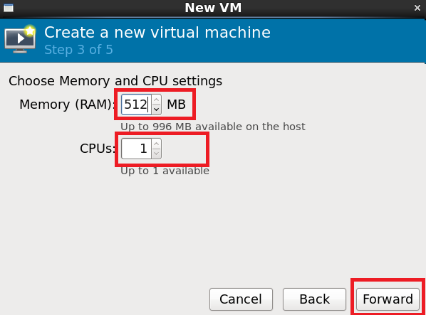

作者: Ji You Email: jumail@qq.com
附录 virt-manager
前提
进行本节内容之前，应该确认按照第一章《由零开始》正确安装了virt-manager。以正确无误地进行本节的后续操作。
准备CentOS-6.5
将使用virt-manager安装的虚拟机，使用的Linux系统为CentOS 6.5。安装的ISO下载链接如下：
http://isoredirect.centos.org/centos/6/isos/x86_64/
在这个链接中提供了众多的下载链接，只需要找到一个速度比较快的下载即可。下载完成之后，可以放到不同的介质上安装，比如U盘、DVD光盘。
确保下载的iso文件为：
CentOS-6.5-x86_64-bin-DVD1.iso
安装CentOS较为熟悉的读者，可以只关注粗体步骤，不熟悉的读者请照步骤进行操作。
本书所使用的CentOS 6.5版本，为了顺利地进行本书的所有实验，请读者务必采用此版本。
如果已经准备好了
CentOS-6.5-x86_64-bin-DVD1.iso，拷贝至运行virt-manager的物理机。放置于/cloud/_base目录下。
# mkdir -p /cloud/_base
拷贝CentOS-6.5-x86_64-bin-DVD1.iso至/cloud/_base
# cd /cloud/_base
# ls
CentOS-6.5-x86_64-bin-DVD1.iso
启动virt-manager
Step 1 开启桌面终端
在CentOS 6.5桌面环境中，新开一个终端，如图1所示：
图1 在桌面环境新开终端
如果想更加快捷方便地使用终端程序，最好的方式是放置于Panel上。

图2 将Terminal程序放置于Panel上。
- virt-mananger是带UI的程序，需要在运行在桌面环境中。利用ssh无法正常启动virt-manager。
Step 2 切换至root用户
然后输入如下命令：
# su -
Password: # 输入root用户密码。
Step 3 启动virt-manager
# virt-manager

图3 启动virt-manager
如果能够成功出现图1.4所示界面，表明virt-manager能够成功启动了。接下来就可以尝试创建一个新的虚拟机了。
创建虚拟机
Step 1 虚拟机名字
virt-manager正确启动之后，点击新建按钮，将会弹出一个对话框。输入虚拟机名字vm-centos。然后点击Forward按钮。

图4 创建新的虚拟机
要注意的是，虚拟机名字，与虚拟机的
hostname是两个概念。虚拟机名字只是用于virt-manager的管理不同虚拟机。虚拟机的hostname是给虚拟机内部的操作系统使用。而虚拟机的hostname主要用于网络主机名的识别。类似人的小名与学名，小名一般在家里面使用，学名适合在学校使用。建议安装虚拟机时，将虚拟机名字与虚拟机的
hostname设为一致。设置hostname位于《附录 安装CentOS 6.5 Linux操作系统》设置主机名小节。
Step 2 选择ISO文件
第一步 选择iso文件时，点击Browse按钮：
图5 选择iso文件
第二步 点击Browse Local按钮：
图6 选择本地文件系统
第三步 点击File System项：
图7 选中File System
第四步 选中/opt/目录

图8 选中并且进入/opt/目录
第五步 选择CentOS iso

图9 选择CentOS DVD
第六步 成功选中

图10 选择成功
然后点击Forward。
Step 3 设置内存与VCPU
根据物理机的情况设置内存与VCPU。一般而言，做实验使用512MB~1024MB内存，1个VCPU足够使用。设置好之后，点击Forward继续。

图11 选择内存及VCPU
Step 4 创建磁盘
根据物理磁盘空间，及实际情况设置虚拟机磁盘大小。一般8G足够可用。如果虚拟机空间不足，后面可以创建虚拟磁盘挂载给虚拟机使用。设置成功之后，点击Forward继续。

图12 创建磁盘
Step 5 创建虚拟机
当前面步骤都完成之后，点击Finish将会创建虚拟机：

图13 创建虚拟机
Step 6 创建成功
当弹出如图14，说明创建成功：

图14 创建虚拟机成功
Step 7 虚拟机安装操作系统
请参照《附录 安装CentOS 6.5 Linux操作系统》进行后续步骤的安装。
错误处理
在Step 5，点击Finish之后，有可能遇到图15所示：
图15 点击Finish，弹出对话框，指明Virtual Network 'default'不可用
点击Yes之后，出现图16所示错误：

图16 缺省default网络不可用
Step 1 Qemu Details
选中qemu，单击右键，选择Details:
图17 Qemu Details
Step 2 新建网络
选中Virtual Networks，再点击新建按钮。
图18 创建新网络
Step 3 步骤简介
点击Forward：

图19 显示大致步骤
Step 4 设置网络名
首先输入网络名，只允许字母，下划线，数字。然后点击Forward：

图20 设置网络名
Step 5 设置网段
如果以前没有创建过网络，那么使用默认提供的网段，否则请输入一个不重复的网段。然后点击Forward：
图20 设置网段
Step 6 设置DHCP
接下来会要求设置DHCP，一般而言，使用默认即可，如果后期虚拟机数量较大，比如200个以上，请将起始IP改小点，并且注意网段与之前的设置一致。然后点击Forward：

图21 设置网络IP
Step 7 网络类型
选择isolated network，请不要选择第二种类型（需要关掉ethx网卡）。
 )
)
图22 选择网络类型
Step 8 创建网络
点击Finish按钮：

图23 创建网络
Step 9 重新选择网络
返回出错UI界面，点击Cancel按钮：

图24 点击Cancel按钮
重新新建虚拟机，并且重新进入如图25界面，选择新建的网络名，点击Finish按钮：
图25 选择新建网络
Step 10 安装操作系统
当弹出如图14，说明创建成功：
图26 创建虚拟机成功
请参照《附录 安装CentOS 6.5 Linux操作系统》进行后续步骤的安装。